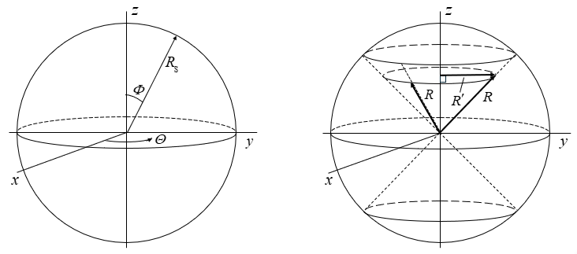
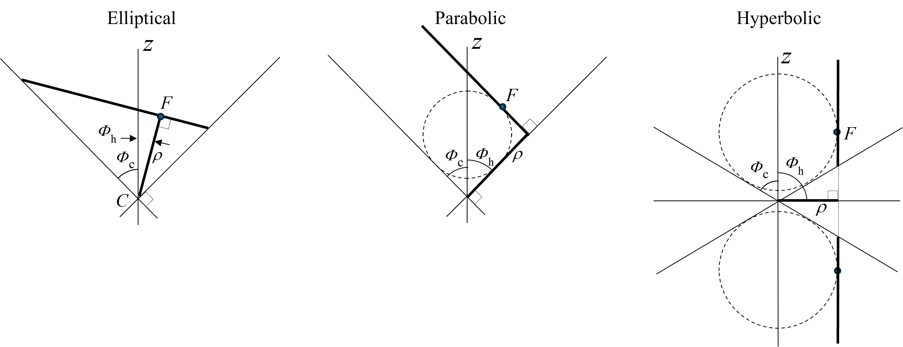

Section I
The conical reference frame
[Introductory section — in progress]
Reference Frames
Gravitational fields generated from a single body have a spherically radiated force. Newton quantified the force acting on a second body in the force field. Typical analyses of motion of the second body are in two dimensions. Orbital motion of the second body about the primary body in the absence of other forces is two dimensional and constrained to a plane justifying two-dimensional analyses. However, a three-dimensional analysis captures all motion, including every conic type and their rectilinear limits.
In this research, all orbital motion is analyzed in a classical spherical reference frame, and since each type of orbit is a conic section, a conical reference frame is constructed within the spherical frame. The conical frame is itself a specialization of this spherical frame, as developed in the Elliptical section. Figure F-1 shows the reference configuration with Cartesian coordinates and superimposed spherical coordinates on the left with nomenclature that is the mathematical convention in many geometry references. On the right a conical reference frame is shown centered at the common origin.

The right-hand panel of Fig. F-1 also introduces \(R'\), the component of \(R\) perpendicular to the cone's \(z\)-axis. Dropping a perpendicular from a satellite position on the cone to the axis fixes a point on the axis; the segment from that point out to the satellite, at a right angle to the axis, is \(R'\), while the segment remaining along the axis is the corresponding axial component of \(R\). Because every point on a given circle of latitude on the cone lies the same slant distance from the apex, \(R\) itself is unchanged as the satellite moves around that circle, even though its perpendicular component \(R'\) sweeps out the full circle with it — the two equal-length \(R\) vectors in Fig. F-1 illustrate this for two positions on the same circle. This decomposition of \(R\) into an axial part and \(R'\) is what reappears in the general reference relation \(R^{2} = r^{2} + 2a(r - p) + R'^{2}\) taken up in the Commonality and Elliptical sections.
Rectilinear trajectories
A parabolic orbit has an eccentricity of one and a total energy of zero in the conservation of energy (vis–viva) equation. It will be shown that elliptical and hyperbolic trajectories that have no rotational component are linear and have eccentricities, \(e\), of one while their total energies have the classical values. Eccentricity alone does not identify the orbit type, total energy discriminates them. Additionally, the origin of the linear radius vectors is the apex of the cone shown in Fig. F-1. The cone apex is a singularity but gives a common reference point for these special cases for the three orbit types.
The vis-viva equation is classic, and its terms have the units of velocity squared (energy). It can be written as:
Analyses of each orbit type shows the application of Eq. (F-1) to the derivation of each motion equation. The symbol \(p\) is the semi latus rectum, or semi parameter, for each conic section or orbit, and it becomes zero for the rectilinear trajectories when \(e = 1\). Motion to the cone apex (zero for each reference frame) is physically and mathematically negated because of division by zero, but the point serves as a convenient reference. The three types of rectilinear trajectories are real given the governing eccentricity and total energy values, but only a realistic segment is viable.
Commonality across conic types
Drawings of conic sections with planes intersecting cones in three dimensions are widespread. Documented analyses produced for geometric, physical, and motion equation derivations are generally two dimensional, which is justified because two body orbital motion is planar. However, the three-dimensional approach followed throughout this research yields additional relationships not visible in the two-dimensional treatment. Figure F-2 shows edge views of each orbit type, and Table F-1 summarizes the findings that are developed in detail in the individual sections.

| Parameter | Elliptical | Parabolic | Hyperbolic |
|---|---|---|---|
| \(\Phi_c\) | \(\pi/4\) | \(\pi/4\) | \(\cos(\Phi_c) = 1/e\) |
| \(\Phi_h\) | \(\sin(2\Phi_h) = e\) | \(\pi/4\) | \(\pi/2\) |
| \(\rho\) | \(\sqrt{ap}\) | \(p\) | \(\sqrt{ap}\) |
Two features of Table F-1 stand out. First, the eccentricity-bearing angle swaps roles between the elliptical and hyperbolic cases: for elliptical orbits \(\Phi_c\) is fixed at \(\pi/4\) while \(\Phi_h\) carries the dependence on \(e\) through \(\sin(2\Phi_h) = e\); for hyperbolic orbits the roles reverse, with \(\Phi_h\) fixed at \(\pi/2\) and \(\Phi_c\) carrying the dependence through \(\cos(\Phi_c) = 1/e\). The parabolic case sits at the degenerate point where both relations collapse onto the same fixed value, since \(e = 1\) exactly. Second, \(\rho\) shares the same closed form, \(\sqrt{ap}\), across the elliptical and hyperbolic cases — a consequence of the simplifying constructions chosen for each (the 45° cone half-angle for the ellipse; the cutting plane parallel to the axis for the hyperbola) rather than a general property of every possible cutting geometry — while the parabolic case reduces to the simpler \(\rho = p\), since \(a\) is undefined there. In every case \(\rho\) retains the same geometric role: the offset of the cutting plane from the cone apex. These results depend on the specific constructions chosen for each case, not on properties intrinsic to every conic-cutting geometry; the justification for each choice, and what would change under a different construction, is developed in the corresponding Elliptical and Hyperbolic sections, which return to this comparison after deriving each relation in full.